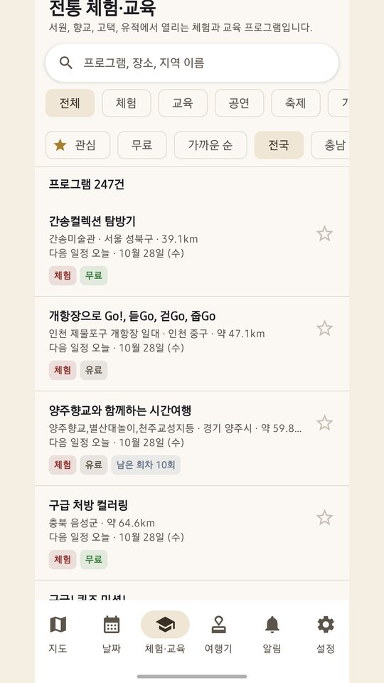

Everything worth seeing, on one map
Built from Korea's public heritage data and refreshed every day.
Exhibitions and museums
See which history and heritage exhibitions are open today or opening soon, and which museums hold National Treasures, sorted by distance.
1,385 traditional markets
Five-day markets show their market days and the next one. Markets open today are highlighted on the map.
Programs and performances
Hands-on programs at Confucian academies and historic houses, plus pansori, gugak and mask-dance performances.
Never miss a show
Get notified when exhibitions you starred are about to open or close, including limited-time and touring shows.
Heritage courses
Follow curated routes through the Baekje, Gaya, Silla and Joseon Confucian heritage regions.
Your trip as a PDF
Stamp places with photos and notes, then keep them as a blog-style, diary-style or puzzle-style PDF.
Today in Korea
Live numbers from the same daily feed the app uses. Titles and place names appear in Korean, as provided by the sources.
Closing soon
Five-day markets open today
Collect stamps, complete the puzzle
Every stamp in a region adds one piece to that region's painting, from Sungnyemun Gate in Seoul to the dol hareubang of Jeju. Finish all 9 pieces and the painting fills in on the map of Korea. Your royal-seal stamp grows more ornate as your collection grows.


A look inside
The app runs in English or Korean.


Private by design
No account and no server of ours. Your stamps, photos and notes stay on your device.
Get it on Google Play